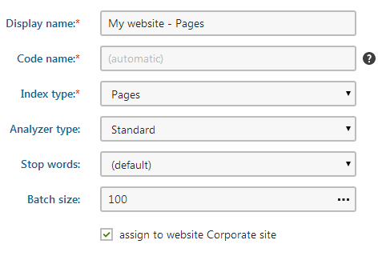
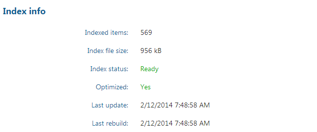

Creating local search indexes
Indexes are the core of the smart search functionality. They store information about the searchable content and define the scope of searches. When a visitor submits a search request, the system looks through the appropriate indexes instead of the actual records in the database. Indexes organize data in a way that is suitable for searching, so the smart search retrieves results faster than linear searches, particularly for large volumes of data.
The following types of locally stored search indexes are available:
|
Index type |
Description |
|
Stores information about pages in the content tree |
|
|
Directly indexes the HTML output of pages. |
|
|
Stores information about the content of discussion forums. |
|
|
Indexes records stored in custom tables. |
|
|
Indexes data that the website's visitors submit through forms. |
|
|
Stores information about users in the system. |
|
|
Stores information about system objects of a specified type. |
|
|
Allows you to use your own custom‑coded search index. Stores any kind of data depending on the implementation. |
Before you can start searching content, you need to create search indexes for your website:
Open the Smart search application.
Select the Local indexes tab.
Click New index.
Fill in the index properties. Most importantly, you need to select the:
Index type – determines what type of content the search index stores
Analyzer type – determines how the index breaks text into searchable tokens

Creating a search indexClick Save to create the search index.
The General tab of the index's editing interface opens. Here you can edit the same properties that you configured when creating the index.
Open the Sites tab and select the websites where you wish to use the index. You can implement multi-site search functionality by assigning the index to more than one website.
Note: If the index includes global objects that are not site-specific, the selection made on the Sites tab does not affect the index's content. However, you can only use the index (through Smart search web parts) on the assigned sites.
If you are creating a Pages or Pages crawler type index, switch to the Cultures tab. Here you can select which language versions of the website's pages are indexed.
At least one culture must be assigned in order for the index to be functional.
Switch to the Indexed content tab and define the content covered by the index. The available options depend on the type of the index:
Go back to the General tab and Rebuild the index.
The Index info section displays information about the current status and parameters of the index.

Editing a search index on the General tab
Once the system finishes building the index, you can start using the index on your website.
The Search preview tab allows you to quickly test the functionality of the index. For testing of advanced features, assign the index to a smart search results web part on a real page.
Maintaining search indexes
You can manage existing search indexes using the actions available on the General tab of the index editing interface.
The system automatically updates search indexes to reflect all changes made to the indexed content. Over time, these updates can make indexes less efficient, particularly in the case of large indexes. To restore optimal search performance for an index, defragment the index by clicking Optimize. You can enable the Optimize local search indexes scheduled task to have the system automatically optimize all smart search indexes once per week.
The Rebuild action deletes the current index file and indexes all specified content again. Use the rebuild action to apply changes made to the index's configuration, including:
Modifications of the analyzer settings (Analyzer type, Stop words)
All options on the Indexed content, Sites or Cultures tabs
Adjustments of the search field settings for the indexed objects
Configuration of web.config keys that affect the indexing process
Code customizations that affect indexing
Tip
You can check whether indexes require a rebuild by looking at the Index status on the General tab or in the index listing. Indexes with the Ready (Rebuild to apply configuration changes) status are functional, but use outdated indexing configuration.
Note that the system cannot automatically detect search indexing changes in the application code or the project's web.config file. Such changes do not update the status of indexes.
Clicking the Rebuild action does not always guarantee that the index starts rebuilding immediately. The process may be delayed if another index is already being rebuilt or if the rebuilding tasks are configured to be handled by the scheduler.
Reference - Search index properties
You can configure the following options when creating new search indexes or editing existing indexes on the General tab:
|
Index property |
Description |
|
Display name |
Name of the index displayed in the administration interface. |
|
Code name |
Serves as a unique identifier for the index (used internally in web part property values or the API). You can leave the default (automatic) option to have the system generate a code name based on the display name. Warning: The system also uses the code name for the physical index file. The fully qualified name of the file must be less than 260 characters long, including the directory path. |
|
Index type |
Determines what type of content the search index stores:
|
|
Analyzer type |
Sets the type of analyzer that the index uses to tokenize text (divide text into searchable tokens). The analyzer processes both the indexed content and the search expressions entered by users. When running searches using the index, the system returns results for items that have at least one token matching the search expression. The following analyzers are available:
See also: Configuring search assistance features for local indexes |
|
Stop words |
Selects the stop word dictionary for Stop or Standard analyzers. Stop words (such as 'and', 'or') are excluded from the index content and the analyzer uses them to divide text into tokens. Note: The application stores the stop word dictionaries as text files in the ~\App_Data\CMSModules\SmartSearch\_StopWords folder. You can edit the content of the dictionaries or add new ones. Each stop word must be entered on a new line and written in lower case. |
|
Batch size |
Sets the maximum amount of records that the system retrieves in a single database query when rebuilding (or creating) the index. This property allows you to optimize indexing performance. The default value is 500. Increasing the value reduces the amount of queries required for large numbers of records, which may improve performance, but also increases memory consumption. The optimal value depends on the type (size) of the indexed objects and on the resources available in your hosting environment. When indexing large objects (e.g. pages), it is recommended to set a reasonably small batch size. |
Crawler settings
When editing Pages crawler type indexes, you can configure the user account and domain name that the crawler uses to read pages:
|
Index property |
Description |
|
User |
Sets the user account that the crawler uses to index pages. Reading pages under a user allows the crawler to:
If empty, the index uses the user account specified in Settings -> System -> Default user ID (or the default administrator user account if the setting is empty). On websites that use Windows authentication, you need to type the user name (including the Active Directory domain in format domain\username) and password. To guarantee that the crawler indexes under the specified Active Directory user, the covered pages cannot be accessible by public users (i.e. Windows authentication must be required). Note: The specified user account must be enabled (content will not be indexed if the user is disabled). |
|
Domain |
Sets the domain that the crawler uses when indexing sites. Enter the domain name without the protocol, for example: www.domain.com If empty, the crawler automatically uses the main domain of the site where the indexed pages belong. For example, you can set a custom domain for web farm servers that do not have access to the main domain. |